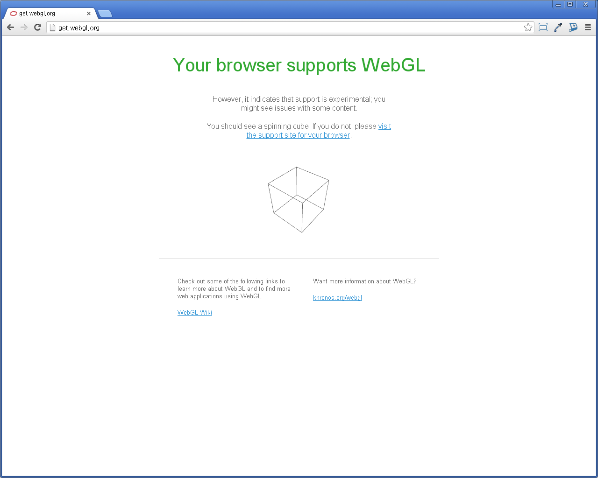

웹에서 시작하는
3d프로그래밍
JenniferSoft / 김학진
발표자 소개
- 2007년 ~ 2011년 Java 3D 개발
- LWJGL (LightWeight Java Game Library)
- Ardor3d (http://www.ardor3d.com/)
- JME (http://jmonkeyengine.com/)
lwjgl + jme
lwjgl + jme
lwjgl + ardor3d

html5
오늘의 주제
- WebGL
- Three.js (3d programming)
- Util.js
- WebGL로 할수 있는것들
webgl
- 웹 기반의 하드웨어(GPU) 가속을 받는 3D Graphics Library
- OpenGL ES 2.0
지원 브라우저
| 데스크탑 | |||||
|---|---|---|---|---|---|
| 모바일 |
IE는 사용하지 못하나요?
- IEWebGL (http://iewebgl.com)
- IE Plugin
- Works in all actual IE versions
모바일은 ?
- Chrome 25beta 지원 예정
- 모바일 그래픽칩 OpenGL ES 2.0를 지원
- 향후 모든 모바일 기기 브라우저에서 지원될수 있음
http://get.webgl.org/
Geometry
- VBO(VertexBufferObject)+ IBO(IndexBufferObject)
- Polygon
- Quad
Polygon
var vertices = [
-1.0, -1.0, 0.0,
0.0, 1.0, 0.0,
1.0, -1.0, 0.0
];
var indices = [0, 2, 1];
Quad
var vertices = [
-1.0, -1.0, 0.0,
0.0, 1.0, 0.0,
1.0, -1.0, 0.0,
2,0, 1,0, 0,0
];
var indices = [0, 2, 1, 1, 2, 3];
WebGL’s rendering pipeline

WebGL 샘플코드를 짜볼까요?
WebGL code(1)
function webGLStart() {
var canvas = document.getElementById("canvas-id");
initGL(canvas);
initShaders()
initBuffers();
gl.clearColor(0.0, 0.0, 0.0, 1.0);
gl.enable(gl.DEPTH_TEST);
drawScene();
}
WebGL code(2)
function initGL(canvas) {
try {
gl = canvas.getContext("experimental-webgl");
gl.viewportWidth = canvas.width;
gl.viewportHeight = canvas.height;
} catch (e) {
}
if (!gl) {
alert("Could not initialise WebGL, sorry :-(");
}
}
WebGL code(3)
function initShaders() {
var fragmentShader = getShader(gl, "shader-fs");
var vertexShader = getShader(gl, "shader-vs");
shaderProgram = gl.createProgram();
gl.attachShader(shaderProgram, vertexShader);
gl.attachShader(shaderProgram, fragmentShader);
gl.linkProgram(shaderProgram);
if (!gl.getProgramParameter(shaderProgram, gl.LINK_STATUS)) {
alert("Could not initialise shaders");
}
gl.useProgram(shaderProgram);
shaderProgram.vertexPositionAttribute = gl.getAttribLocation(shaderProgram, "aVertexPosition");
gl.enableVertexAttribArray(shaderProgram.vertexPositionAttribute);
shaderProgram.vertexColorAttribute = gl.getAttribLocation(shaderProgram, "aVertexColor");
gl.enableVertexAttribArray(shaderProgram.vertexColorAttribute);
shaderProgram.pMatrixUniform = gl.getUniformLocation(shaderProgram, "uPMatrix");
shaderProgram.mvMatrixUniform = gl.getUniformLocation(shaderProgram, "uMVMatrix");
}
WebGL code(4)
function initBuffers() {
triangleVertexPositionBuffer = gl.createBuffer();
gl.bindBuffer(gl.ARRAY_BUFFER, triangleVertexPositionBuffer);
var vertices = [
0.0, 1.0, 0.0,
-1.0, -1.0, 0.0,
1.0, -1.0, 0.0
];
gl.bufferData(gl.ARRAY_BUFFER, new Float32Array(vertices), gl.STATIC_DRAW);
triangleVertexPositionBuffer.itemSize = 3;
triangleVertexPositionBuffer.numItems = 3;
var indices = [0, 2, 1];
triangleIndexPositionBuffer = gl.createBuffer();
gl.bindBuffer(gl.ELEMENT_ARRAY_BUFFER, triangleIndexPositionBuffer);
gl.bufferData(gl.ELEMENT_ARRAY_BUFFER, new Uint16Array(indices), gl.STATIC_DRAW);
triangleVertexColorBuffer = gl.createBuffer();
gl.bindBuffer(gl.ARRAY_BUFFER, triangleVertexColorBuffer);
var colors = [
1.0, 0.0, 0.0, 1.0,
0.0, 1.0, 0.0, 1.0,
0.0, 0.0, 1.0, 1.0
];
gl.bufferData(gl.ARRAY_BUFFER, new Float32Array(colors), gl.STATIC_DRAW);
triangleVertexColorBuffer.itemSize = 4;
triangleVertexColorBuffer.numItems = 3;
}
WebGL code(5)
function drawScene() {
gl.viewport(0, 0, gl.viewportWidth, gl.viewportHeight);
gl.clear(gl.COLOR_BUFFER_BIT | gl.DEPTH_BUFFER_BIT);
mat4.perspective(45, gl.viewportWidth / gl.viewportHeight, 0.1, 100.0, pMatrix);
mat4.identity(mvMatrix);
mat4.translate(mvMatrix, [0, 0.0, -7.0]);
gl.bindBuffer(gl.ARRAY_BUFFER, triangleVertexPositionBuffer);
gl.vertexAttribPointer(shaderProgram.vertexPositionAttribute, triangleVertexPositionBuffer.itemSize, gl.FLOAT, false, 0, 0);
gl.bindBuffer(gl.ARRAY_BUFFER, triangleVertexColorBuffer);
gl.vertexAttribPointer(shaderProgram.vertexColorAttribute, triangleVertexColorBuffer.itemSize, gl.FLOAT, false, 0, 0);
setMatrixUniforms();
gl.bindBuffer(gl.ELEMENT_ARRAY_BUFFER, triangleIndexPositionBuffer);
gl.drawElements(gl.TRIANGLES, 3, gl.UNSIGNED_SHORT,0);
}
WebGL Engine.js
- Three.js
- SpiderGL
- SceneJS
Three.js
- Abstraction layer over WebGL
- 3D scenegraph library
- http://github.com/mrdoob/three.js
- 2010 04 24 ~ 2013 02 15 - r56
- + : Active Community, updated frequently
- - : Documentation
- http://mrdoob.com/
Three.js sample
var camera, scene, renderer;
var mesh;
init();
animate();
function init() {
renderer = new THREE.WebGLRenderer();
renderer.setSize( window.innerWidth, window.innerHeight );
document.body.appendChild( renderer.domElement );
//
camera = new THREE.PerspectiveCamera( 70, window.innerWidth / window.innerHeight, 1, 1000 );
camera.position.z = 400;
scene = new THREE.Scene();
var geometry = new THREE.CubeGeometry( 200, 200, 200 );
var material = new THREE.MeshNormalMaterial();
mesh = new THREE.Mesh( geometry, material );
scene.add( mesh );
window.addEventListener( 'resize', onWindowResize, false );
}
function onWindowResize() {
camera.aspect = window.innerWidth / window.innerHeight;
camera.updateProjectionMatrix();
renderer.setSize( window.innerWidth, window.innerHeight );
}
function animate() {
requestAnimationFrame( animate );
mesh.rotation.x += 0.005;
mesh.rotation.y += 0.01;
renderer.render( scene, camera );
}
Three.js sample
좌표계
- DiretX (왼손 좌표계)
- OpenGL (오른손 좌표계)

Camera
- Perspective Camera (투시투영)
- Orthographic Camera (직교투영)
Material
- MeshBasicMaterial
- MeshFaceMaterial
- MeshLambertMaterial
- MeshNormalMaterial
- MeshPhongMaterial
Material
Mesh
- 그물망 형태로 만들어진 구조물 또는 그 형태
- Mesh = Geometry + Material
Light
현실세계와 같이 물체를 식별하는데 빛이 필요하다.
- Point Light
- Direction Light
- Spot Light
Point Light
Direction Light
Spot Light
Texture
다각형 표면을 효과적으로 이미지로 렌더링 하는 기법
Scene
- 하나의 화면을 구성하는 집합체
- 각각의 Scene으로 역할을 분리할수 있다
- 저장이 가능하다
Import
- ColladaLoader .dae
- JSONLoader .js
- SceneLoader .js
Export
- Blender - http://www.blender.org/
- .dae .json
- http://www.turbosquid.com/
tQuery.js
- three.js + jQuery.js
- three.js 을 wrapping 하여 사용하기 더 쉽다
- ported to three.js R53
tQuery.js
var world = tQuery.createWorld().boilerplate().start();
var object = tQuery.createTorus().addTo(world);
Physics Engine.js
- Physijs (for three.js base Ammo.js)
- cannon.js
- bullet.js
Physijs
WebGL Inspector
- http://benvanik.github.com/WebGL-Inspector
- Capture individual frames
- View assets and programs
- Example
WebGL로 할수 있는것들
Google Map (WebGL)
maps.google.com
Google Body
www.zygotebody.com

Game
hexgl.bkcore.com
WebGL Earth
www.webglearth.com
WebGL+3D printer
www.myrobotnation.com
Visitor Monitor
www.chromeweblab.com/lab-tag-explorer
Arms and Ammunition
http://workshop.chromeexperiments.com/projects/armsglobe/